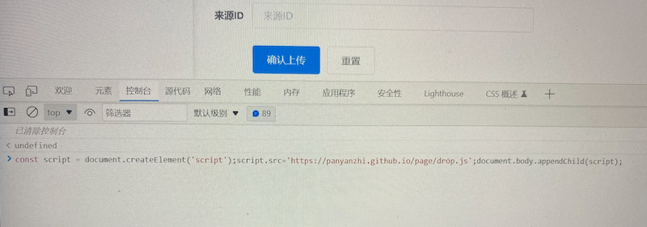

常用： 21世纪 学科网 攀岩志
安装步骤：
1、打开上传页面 - 右键 - "检查" - "控制台"
2、如下图：复制下面代码，然后粘贴在"控制台"里，然后"回车"，完成安装
const script = document.createElement('script'); script.src='https://panyanzhi.github.io/page/drop.js'; document.body.appendChild(script);

3、在"控制台"同一栏的最右侧"X"按钮，点击可关闭"控制台"